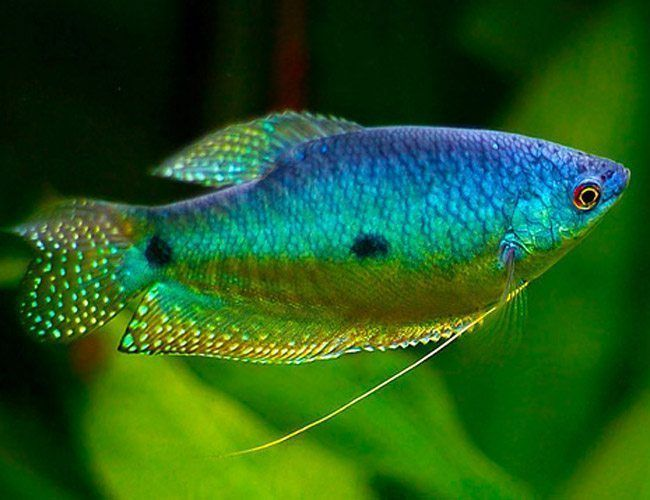
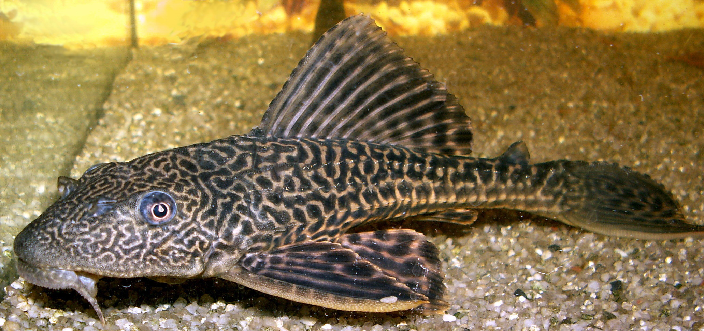
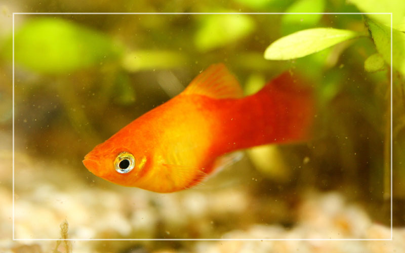
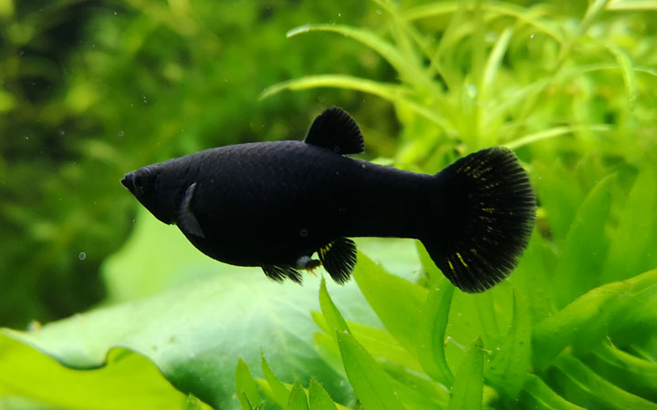

El pez Dojo, también conocido como anguila japonesa, es un pez de agua dulce originario de Asia. Tiene un cuerpo alargado y delgado, sin escamas, con una piel viscosa y de color marrón oscuro o grisáceo. Pueden alcanzar hasta 30 centímetros de longitud y tienen una esperanza de vida de 15 años o más. Los Dojos son una especie nocturna y suelen ser activos por la noche, alimentándose de pequeños invertebrados y otros peces. Son populares en acuarios debido a su aspecto inusual y comportamiento interesante. Además, son resistentes y fáciles de cuidar.
Los Gouramis enanos son un tipo de pez de agua dulce muy populares en acuarios. Son originarios de Asia y se caracterizan por su pequeño tamaño, que rara vez supera los 5 centímetros de longitud. Vienen en una variedad de colores vibrantes, incluyendo azul, rojo, naranja y amarillo. Son conocidos por ser pacíficos y fáciles de cuidar, lo que los hace una excelente opción para acuaristas principiantes. Aunque los Gouramis enanos son omnívoros y se alimentan de una variedad de alimentos, prefieren una dieta de alimentos vivos o congelados, como larvas de mosquito y gusanos de sangre. Son una especie de pez muy popular en la acuariofilia debido a su belleza y fácil mantenimiento.
El pez pleco, también conocido como plecostomus, es un pez de agua dulce originario de América del Sur. Es conocido por su característica boca en forma de ventosa, que utiliza para adherirse a superficies y raspar algas y otros desechos del acuario. Los plecos tienen un cuerpo robusto y aplanado, y pueden crecer hasta 30 centímetros de longitud o más, dependiendo de la especie. Vienen en una variedad de colores, incluyendo marrón, gris y negro. Son una especie resistente y fácil de cuidar, pero necesitan un acuario grande y bien filtrado para prosperar. Aunque son principalmente herbívoros, los plecos también comen alimentos proteicos como gusanos y camarones. Son una especie popular en la acuariofilia debido a su capacidad para mantener el acuario limpio y su apariencia distintiva.
El pez Carassius auratus, también conocido como pez dorado o goldfish, es una especie de pez de agua dulce originaria de Asia. Son conocidos por su característica forma de cuerpo, que es redondeada y comprimida lateralmente, y por su coloración variada, que puede ser naranja, roja, blanca o negra. Los goldfish son una especie de tamaño mediano que pueden crecer hasta 25 centímetros de longitud o más, dependiendo de la variedad y las condiciones de cuidado. Son una especie resistente y fácil de cuidar, y se alimentan de una variedad de alimentos, incluyendo alimentos comerciales para peces, verduras y proteínas. Los goldfish son una especie popular en la acuariofilia debido a su apariencia atractiva y fácil mantenimiento, y son comúnmente utilizados en estanques de jardín y acuarios domésticos.
El pez molly es una especie de pez de agua dulce originaria de América Central y del Sur. Es un pez pequeño y colorido que viene en una variedad de colores, incluyendo negro, blanco, naranja, amarillo y dorado. Los mollys pueden crecer hasta 10 centímetros de longitud y tienen una esperanza de vida de 3 a 5 años. Son una especie pacífica y social que prefieren vivir en grupos de al menos tres individuos. Son omnívoros y se alimentan de una variedad de alimentos, incluyendo alimentos comerciales para peces, algas y pequeños invertebrados. Los mollys son una especie popular en la acuariofilia debido a su apariencia atractiva y fácil mantenimiento.